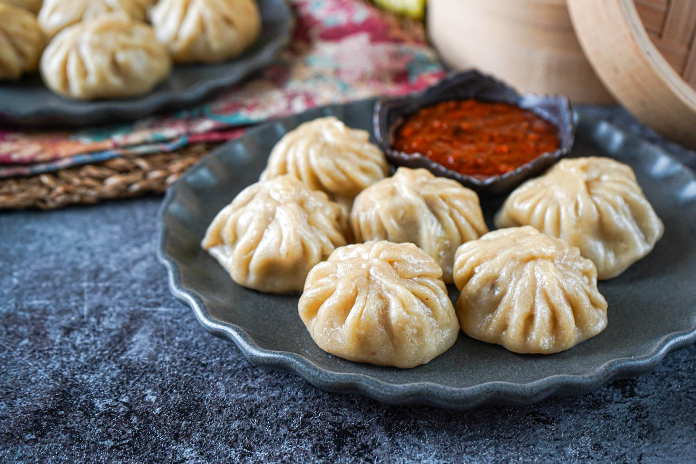

Momo

Description
Momo is a popular Nepali dish inspired by Tibetan dumplings. It is filled
with minced meat or vegetables and steamed to perfection. It is often
served with a spicy tomato chutney.
Ingredients
- Flour
- Minced meat or vegetables
- Onion
- Garlic and ginger
- Salt and pepper
- Oil
Steps
- Mix flour with water and a pinch of salt to make dough.
-
Prepare the filling using minced meat or vegetables, onion, garlic, and
ginger.
- Roll the dough into small circles and add a spoonful of filling.
- Fold and seal the edges to form momos.
- Steam the momos for about 10–12 minutes.
- Serve hot with spicy chutney.
Back to Home Page